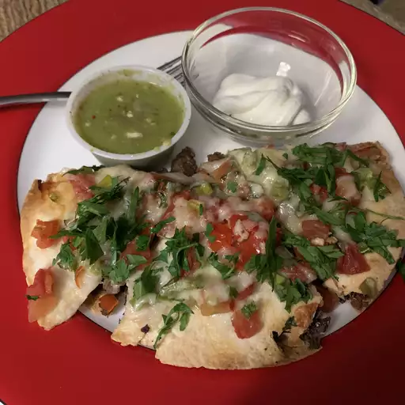

Pizza Recipe

Ingredients
- ½ pound ground beef
- 1 medium onion, diced
- 1 clove garlic, minced
- 1 tablespoon chili powder
- 1 teaspoon ground cumin
- ½ teaspoon paprika
- ½ teaspoon salt
- ½ teaspoon black pepper
- 1 (16 ounce) can refried beans
- 4 (10 inch) flour tortillas
- ½ cup salsa
- 1 cup shredded Cheddar cheese
- 1 cup shredded Monterey Jack cheese
- 2 green onions, chopped
- 2 tomatoes, diced
- ¼ cup thinly sliced jalapeño pepper
- ¼ cup sour cream (Optional)
Steps
-
Preheat the oven to 350 degrees F (175 degrees C). Coat 2 pie plates
with non-stick cooking spray.
-
Place ground beef, onion, and garlic in a skillet over medium heat. Cook
until beef is evenly browned and crumbly, 5 to 7 minutes. Drain and
discard grease. Season beef with chili powder, cumin, paprika, salt, and
pepper.
-
Lay one tortilla in each pie plate, and cover with a layer of refried
beans. Spread 1/2 of the seasoned ground beef over each one, and then
cover with a second tortilla. Bake in the preheated oven until tortillas
are crisp, about 10 minutes.
-
Remove pizzas from the oven and set aside to cool slightly. Then spread
1/2 of the salsa over each top tortilla. Cover each pizza with 1/2 of
the Cheddar and Monterey Jack cheeses. Place 1/2 of the tomatoes, 1/2 of
the green onions, and 1/2 of the jalapeño slices onto each one.
-
Return pizzas to the oven and bake until cheese is melted, about 5 to 10
more minutes. Let pizzas cool slightly before slicing each one into 4
pieces.